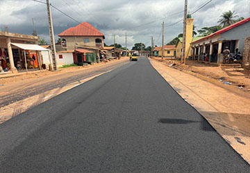

Nos Réalisations
Chaque projet raconte une histoire. Voici ceux que nous avons concrétisés, avec passion, innovation et une vraie obsession du résultat.
Bâtiment

Résidence Djamiyah
Kissidougou, Guinée
Terrassement

Route Cissela-Kouroussa et du Pont à Sanacia 2
Cissela-Kouroussa, Guinée
Bâtiment

Immeuble R+10
Guinée
Ponts & Chaussées

Route Cissela-Kouroussa
Cissela-Kouroussa, Guinée
Assainissement & Eau

Voirie De Conakry
Conakry, Guinée
Terrassement

Route Gueckedou-Kondebadou
Gueckedou-Kondebadou, Guinée
Ponts & Chaussées

Route Cissela-Kouroussa
Cissela-Kouroussa, Guinée
Assainissement & Eau

Voirie De Conakry
Conakry, Guinée
Ponts & Chaussées

Bitumage a Somoyah
Samoyah, Guinée
Un projet en tête ? Nous sommes prêts à relever le défi !
Discutons-en